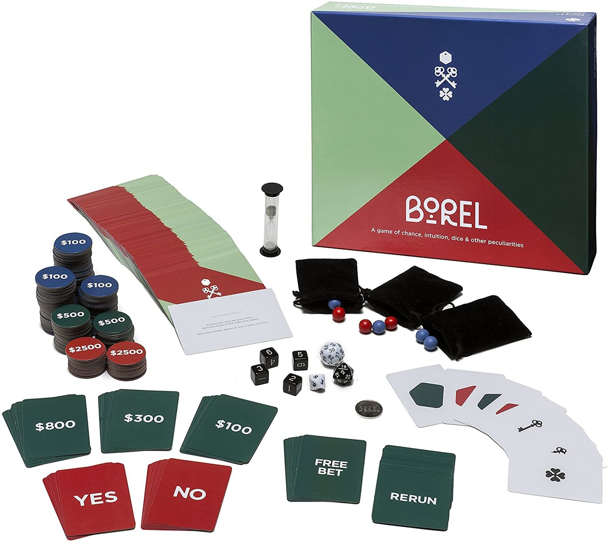

Was meinen wir, wenn wir sagen: «Das passiert mit 30 %»?

Eine Welt, alle vier Schwerpunkte: der ganze Bogen von Kapitel 1 bis 4 an einer Situation.
Ein Schwerpunkt über mehrere Welten: dieselbe Frage, andere Zahlen.
Grundwissen dazu: Eine Wahrscheinlichkeit ist unsicher · sie hängt vom Informationsstand ab · sie ist subjektiv.
Malle, G. & Malle, S. (2003): Was soll man sich unter einer Wahrscheinlichkeit vorstellen? mathematik lehren 118, 52–56.